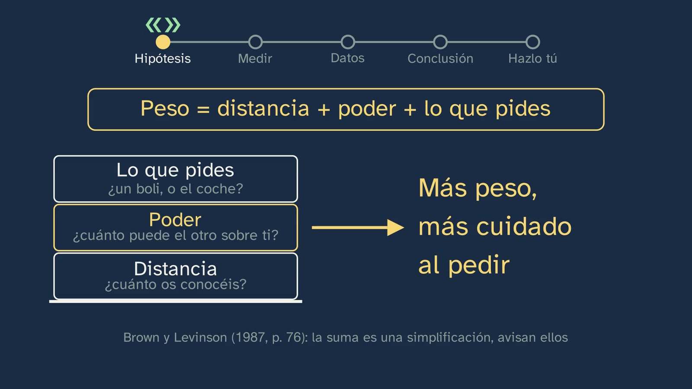
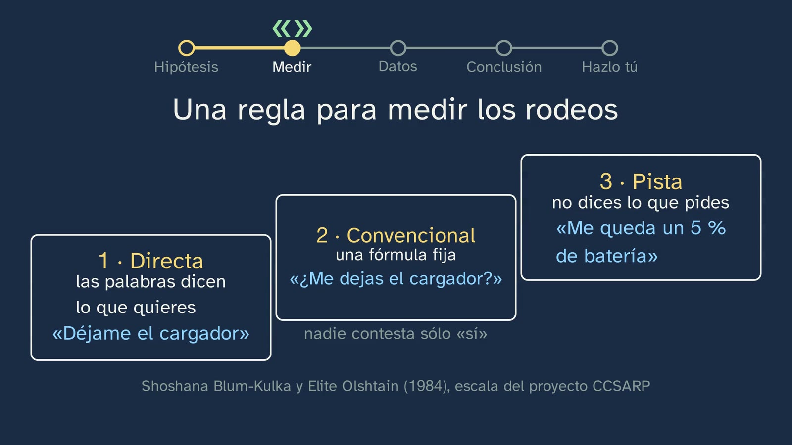
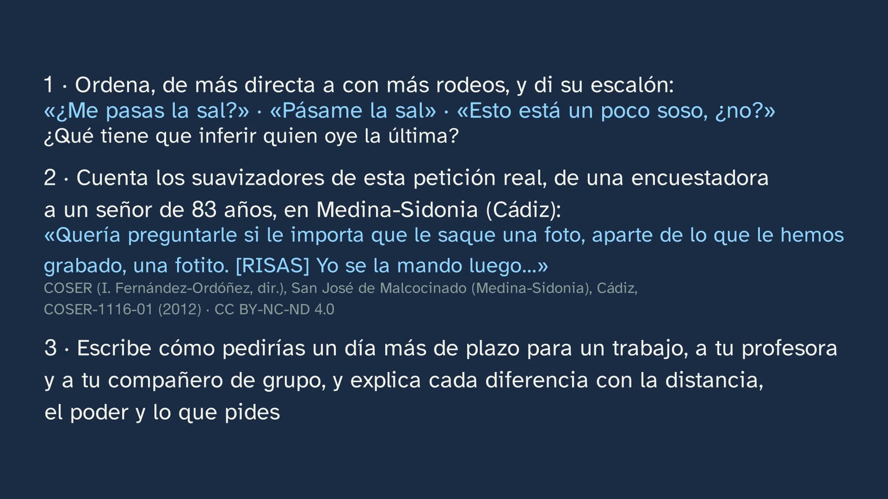

Laboratorio: ¿cómo pedimos las cosas?
En pocas palabras
El primer laboratorio de lengua del canal. Parte de algo que todos hacemos sin pensar: si te quedas sin batería, a tu hermano le dices «déjame el cargador»; a alguien que no conoces, no se lo dices así. ¿De qué depende cómo pedimos? Vera no da la respuesta: la pone a prueba como lo haría un lingüista, en cinco pasos que se quedan a la vista toda la clase.
- La hipótesis. La que anunció la clase 2, citada tal cual («cuanto más pides, y a quien menos confianza tienes, más rodeos das»), y su origen: para Brown y Levinson (1987, p. 76), lo que pesa una petición depende de la distancia, del poder del otro y de lo que se pide, y cuanto más pesa, con más cuidado se pide.
- Una regla para medir, antes de mirar los datos. Los tres escalones de la escala del proyecto CCSARP (Blum-Kulka y Olshtain, 1984): la petición directa, la indirecta convencional (una fórmula fija) y la pista. Y los suavizadores, que en cualquier escalón arropan la petición: lo que los lingüistas llaman atenuación. El alumno prueba la regla con tres peticiones reales y apuesta qué hacemos cuando pedimos más.
- Los datos. Las 53 entrevistas del corpus ESLORA (Universidade de Santiago de Compostela). Cada entrevista es un experimento natural: la misma investigadora, con la misma persona y el mismo trato, pide lo pactado («cuénteme») y, al final, algo que va de más: que conteste un cuestionario.
- El recuento y la conclusión, con sus límites. Cuando se pide más, la petición lleva más suavizadores (2,45 de media frente a 1,03; y, comparando a cada persona consigo misma, en 21 de 28 entrevistas), pero no sube de escalón: casi nunca una pista, y la fórmula no sube de forma clara. Con quien es mucho mayor, además, el usted. La hipótesis se cumple en parte, y los datos la corrigen. Y la clase dice lo que no se puede concluir: son sólo entrevistas, de Galicia y de un corpus; la clasificación es nuestra y se hizo una vez; el cuestionario llega con el cansancio del final; y la confianza y el poder no se han podido medir.
- Hazlo tú. Diez peticiones que el alumno haya enviado, en una tabla, para probar lo que el corpus no mide; y, si habla otra lengua, también en ella.
Por el camino cae el error típico, «pedir a las claras es de mala educación», con tres pruebas, y su reverso: más rodeos no siempre es más cortés (Escandell, 1995).
Qué aporta que no traen los libros. En el contraste con dieciséis proyectos editoriales de 1.º de Bachillerato, revisados el 29 y el 30/09/2026 sólo para comparar, ninguno hace el ciclo completo que pide la competencia 9: pregunta, hipótesis, datos de lengua, análisis y conclusión. Ninguno nombra a Brown y Levinson, y ninguno usa los corpus de la RAE. Esta clase hace el ciclo entero con un corpus abierto que se puede usar mañana en el aula, con una regla de medida explícita, un recuento propio que se puede revisar (los criterios están en esta ficha) y la honradez de decir dónde se para. El alumno no sólo aprende qué es una petición indirecta: aprende cómo se pone a prueba una idea sobre la lengua, y cómo se replica.
Objetivo. Al terminar, el alumnado sabrá poner a prueba con datos reales, y con sus propios mensajes, una hipótesis sobre la lengua: que cuanto más pides, y a quien menos confianza tienes, más rodeos das; y medir esos rodeos con una escala de tres escalones y contando los suavizadores.
Currículo
Real Decreto 243/2022, Lengua Castellana y Literatura I, materia común de 1.º de Bachillerato (texto consolidado del BOE; su última actualización, del 02/07/2026, no toca el anexo de Lengua, como se comprobó para la clase 2).
| Elemento | Qué dice el decreto | Dónde se trabaja |
|---|---|---|
| Saber básico (bloque B, «Comunicación», 1. Contexto) | «Componentes del hecho comunicativo: grado de formalidad de la situación y carácter público o privado; distancia social entre los interlocutores; propósitos comunicativos e interpretación de intenciones; canal de comunicación y elementos no verbales de la comunicación.» | Su centro: «distancia social entre los interlocutores» (las tres pesas de Brown y Levinson, 3:23; la edad y el usted, 11:09; la confianza, que el corpus no mide, 12:34) e «interpretación de intenciones» (la pista del pelo, que la otra entiende como reproche, 6:08; el ejercicio 1) |
| Saber básico (bloque B, 3. Procesos) | «Interacción oral y escrita de carácter formal. Tomar y dejar la palabra. Cooperación conversacional y cortesía lingüística.» | Peticiones reales en una interacción oral formal y con distancia, la entrevista; y la cortesía, en el error típico (13:17). «Tomar y dejar la palabra», en la clase 4 |
| Saber básico (bloque D, «Reflexión sobre la lengua») | «Elaboración de conclusiones propias sobre el funcionamiento del sistema lingüístico con un metalenguaje específico a partir de la observación, comparación y clasificación de unidades comunicativas y del contraste entre lenguas […]» | El método entero de la clase: observar (el corpus), clasificar (la escala y los suavizadores), comparar (la misma persona consigo misma, 10:15), concluir con un metalenguaje (directa, convencional, pista, atenuación) y contrastar lenguas (español e inglés, 13:45; el «Hazlo tú» en otra lengua, 16:05) |
| Competencia específica 3 | «Producir textos orales y multimodales, con atención preferente a textos de carácter académico, con rigor, fluidez, coherencia, cohesión y el registro adecuado, atendiendo a las convenciones propias de los diferentes géneros discursivos, y participar en interacciones orales con actitud cooperativa y respetuosa, tanto para construir conocimiento y establecer vínculos personales, como para intervenir de manera activa e informada en diferentes contextos sociales.» | Su descripción pide, en esta etapa, «especial atención a situaciones de carácter público, con mayor distancia social entre los interlocutores», y dice que «adecuar los usos orales al propósito comunicativo y calibrar sus efectos en el interlocutor es esencial para una comunicación eficaz, basada en el respeto y el cuidado recíproco». La clase muestra cómo se calibra una petición según a quién y qué se pide |
| Competencia específica 9 | «Consolidar y profundizar en el conocimiento explícito y sistemático sobre la estructura de la lengua y sus usos, y reflexionar de manera autónoma sobre las elecciones lingüísticas y discursivas, con la terminología adecuada, para desarrollar la conciencia lingüística, para aumentar el repertorio comunicativo y para mejorar las destrezas tanto de producción oral y escrita como de comprensión e interpretación crítica.» | Su descripción pide el método que sigue la clase: «la formulación de hipótesis y de reglas, el uso de contraejemplos», «a partir de la reflexión y de la elaboración de pequeños proyectos de investigación», «integrando los niveles morfosintáctico, semántico y pragmático». Aquí, la pragmática con la morfología: el imperativo, el condicional y el imperfecto de cortesía, el diminutivo, el tú y el usted |
| Criterio 3.2 | «Participar de manera activa y adecuada en interacciones orales (formales e informales) y en el trabajo en equipo con actitudes de escucha activa y estrategias de cooperación conversacional y cortesía lingüística.» | Sólo en análisis: en el vídeo el alumno observa y clasifica estrategias de cortesía, pero no participa en ninguna interacción oral. Para trabajarlo de verdad, el ejercicio 3 se puede representar en parejas (ver el plan) y la actividad es trabajo en equipo |
| Criterio 9.2 | «Explicar y argumentar la interrelación entre el propósito comunicativo y las elecciones lingüísticas del emisor, así como sus efectos en el receptor, utilizando el conocimiento explícito de la lengua y un metalenguaje específico.» | El ejercicio 3 (explicar cada diferencia con la distancia, el poder y lo que se pide), la pista y su efecto en quien la oye (el pelo, el ejercicio 1) y los suavizadores nombrados por su función (8:58) |
| Criterio 9.3 | «Elaborar y presentar los resultados de pequeños proyectos de investigación sobre aspectos relevantes del funcionamiento de la lengua, formulando hipótesis y estableciendo generalizaciones, utilizando los conceptos y la terminología lingüística adecuada y consultando de manera autónoma diccionarios, manuales y gramáticas.» | El «Hazlo tú» (15:35) y la actividad de esta ficha: una hipótesis, una tabla, un recuento y una conclusión que dice hasta dónde se puede generalizar («lo que no podemos concluir», 15:07) |
Lo que hay que traer. De la clase 2: qué es un acto de habla indirecto («¿tienes hora?») y la inferencia; dos de sus soluciones vuelven hoy como ejemplos de la escala. De la ESO, los mismos saberes en 3.º y 4.º: «Interacción oral y escrita de carácter informal y formal: cooperación conversacional y cortesía lingüística» y la «Identificación y uso de las variaciones de las formas deícticas (fórmulas de confianza y cortesía) en relación con las situaciones de comunicación» (Real Decreto 217/2022, Lengua Castellana y Literatura, bloque B de tercero y cuarto).
Dónde vuelve. La clase 4, «Cuidar la imagen del otro: la cortesía», contesta la pregunta que esta deja abierta: por qué arropamos lo que pedimos. La clase 5, «Tú, usted y el registro», trata el tratamiento que aquí sólo se cuenta. La clase 7 es el segundo laboratorio del tema.
Cómo está construida la clase
Capítulos del vídeo
Unos dieciocho minutos, en trece capítulos. Es un laboratorio de lengua: Vera, sin bata, y la pizarra, con el recorrido de cinco paradas arriba todo el tiempo, para que el alumno sepa siempre en qué paso del método está. Sigue el modelo didáctico de la materia en el canal: la lengua observada con datos reales, primero la hipótesis y la predicción, después los datos y la conclusión con lo que no se puede concluir, y un «Hazlo tú» con datos propios.
| Capítulo (minuto) | Qué hace | Base formativa |
|---|---|---|
| Qué vamos a ver (0:00) | Vera saluda; el mapa del tema, con las comillas de los dos laboratorios; hoy, pedir, con datos reales y como trabaja un lingüista | Saber dónde se está (aprendizaje multimedia: señalización) |
| Lo que ya sabes (0:20) | ¿Qué es un acto de habla indirecto? Pausa con contador. «¿Tienes hora?»: forma de pregunta, acto de pedir; quien escucha lo infiere | Recuperar (Roediger y Karpicke, 2006), con un ejemplo que no se cruza con otro tema |
| Las soluciones (0:44) | Los tres ejercicios de la clase 2, cada uno con su enunciado; «¿Puedes bajar la música?» y la frase de la batería se guardan, porque vuelven. A cámara, el gancho del cargador (2:23) | Espaciar; las soluciones, con su enunciado; el gancho, con su contexto |
| La misión (2:33) | Hoy no hay respuesta: se pone a prueba en cinco pasos, que se quedan arriba | Participar, no sólo mirar (Hake, 1998); el problema antes que la explicación (Kapur, 2008) |
| La hipótesis (3:03) | La de la clase 2, citada tal cual y con su origen; las tres pesas de Brown y Levinson; la suma, con su aviso de que simplifica; el poder, la pieza que faltaba | Primero la intuición (las pesas), después lo exacto (la fórmula, con su página) |
| Cómo medir (3:55) | Los tres escalones, con el cargador; las dos frases de la clase 2 vuelven como fórmula y como pista; los suavizadores («atenuar»); dar rodeos es subir de escalón o arropar. Para y piensa con tres peticiones reales (pausa en 5:50) y la apuesta (pausa en 6:46) | La regla, definida antes de mirar los datos; un ejemplo resuelto y después la práctica; predecir antes de ver (White y Gunstone, 1992) |
| Los datos (6:52) | ESLORA: lo que marcaron sus investigadores y lo que buscamos nosotros. La primera entrevista: «Cuénteme…» y «¿Me va a permitir…?»; cambia lo que pide. ¿Siempre? La segunda: contar los suavizadores (pausa en 8:52); son seis, y el escalón no sube | ¿Cómo lo sabemos? (el experimento natural); para y piensa; explicárselo a uno mismo («si cuentas alguno menos, también vale, siempre que sepas decir por qué») |
| El recuento (9:39) | Que el cuestionario pesa más lo dicen los propios entrevistadores; las medias (1,03 frente a 2,45) y las peticiones a secas (38 de 111 frente a 1 de 31); cada persona consigo misma (21 de 28). La apuesta, resuelta: ni pista ni fórmula, sino arropar. A mitad, Vera (11:04) | ¿Cómo lo sabemos?; el error, a la vista: la apuesta del alumno se tacha con los datos (Muller y otros, 2008); a mitad, el profe |
| La distancia (11:09) | La confianza no se puede medir en este corpus; la edad, sí: el usted crece con la edad (0, 53 y 71 %) y el escalón no cambia. El trato no es simétrico. Para la confianza, un estudio escrito (Ballesteros, 2001), con su aviso: cambian varias cosas a la vez | ¿Cómo lo sabemos?, con sus límites dichos en voz |
| El error típico (13:17) | «Pedir a las claras es de mala educación», tachado con tres pruebas: los «cuénteme» a secas a dos personas mayores, las conversaciones entre jóvenes (7 de 18) y el contraste con el inglés (Díaz Pérez, 2005). Y al revés: más rodeos no siempre es más cortés (Escandell, 1995), con la vuelta del pelo | El error, a la vista, desmontado razonando |
| La conclusión (14:40) | La hipótesis, en parte y corregida; «¿Acertaste tu apuesta?»; lo que no podemos concluir, en cuatro líneas | Pensamiento visible: lo que sabemos y lo que no |
| Hazlo tú (15:35) | Diez peticiones propias, en una tabla de cinco columnas, con tres preguntas; otra lengua; ESLORA, en su web | Participar; aprender a aprender |
| Para practicar y seguir pensando (16:24) | El resumen, avisando de que se repite; tres ejercicios, uno con una petición real del COSER; la pregunta abierta, con contador; la clase siguiente; la despedida | Espaciar (el ejercicio 1 recupera la inferencia); la pregunta abierta |


Plan de una sesión de 50 minutos
| Minutos | Qué se hace |
|---|---|
| 0–4 | Sin vídeo, «Antes de empezar» en la hoja: la apuesta, por escrito y con una razón. A mano alzada: ¿quién ha elegido cada opción? Se apunta en la pizarra y no se comenta. |
| 4–11 | Vídeo de 0:00 a 5:50. En 0:27 (¿qué es un acto indirecto?), basta con el contador del vídeo. Parar en 5:45: en parejas, el escalón de las tres peticiones reales (pregunta 2 de la hoja, un minuto). |
| 11–16 | Vídeo de 5:50 a 8:52. Al llegar a la apuesta del vídeo (6:46), no hace falta parar: ya está escrita. Parar en 8:31: cada pareja subraya en la hoja los suavizadores de la petición del señor de 89 años y decide el escalón (dos minutos). |
| 16–21 | Vídeo de 8:52 a 10:37: los seis suavizadores, el recuento, la apuesta resuelta y Vera a mitad. Parar: volver a la pizarra del principio, ¿quién acertó?, y la pregunta 5 de la hoja (por qué comparar a cada persona consigo misma). |
| 21–27 | Vídeo de 11:09 a 14:02: la distancia y el error típico. Parar en 13:15, tras el estudio de los vecinos y el amigo: pregunta 6 de la hoja, a mano alzada. |
| 27–29 | Vídeo de 14:40 a 14:57: la conclusión y lo que no se puede concluir. |
| 29–45 | La actividad: el laboratorio, en grupo (abajo). |
| 45–50 | Vídeo de 15:35 al final (18:36): el «Hazlo tú», el resumen, los ejercicios y la pregunta abierta. El «Hazlo tú» y los ejercicios, para casa. Si hay otra sesión, el ejercicio 3 se representa en parejas: uno pide el plazo y otro hace de profesora y después de compañero (criterio 3.2). |
Errores típicos y cómo se tratan
Con una advertencia honesta: ninguno de estos errores está medido con alumnado español de Bachillerato. El primero es el que la ficha del tema prevé para esta clase; los demás son previsibles por lo que la clase enseña, y se dice en cada caso qué hay detrás.
- «Pedir a las claras es de mala educación». Los autores que han comparado el español y el inglés británico lo niegan, pero como interpretación, no como medida. Ballesteros (2001, p. 188) escribe: «Personalmente consideramos que ser estructuralmente directo no implica mayor grado de descortesía»; y más adelante, que los estereotipos «"los españoles son maleducados" o "los ingleses son hipócritas"» «son incorrectos» (p. 193). Hickey y Vázquez Orta (1994, p. 285): «el carácter directo de una expresión no se asocia con la descortesía necesariamente». Nadie, que sepamos, ha medido cómo juzgan los británicos un imperativo español: por eso la clase dice «los lingüistas que lo han estudiado sostienen», no «se ha demostrado». La clase lo desmonta en 13:17 con tres pruebas: las dos investigadoras piden «cuénteme» a secas a una señora de 70 años y a un señor de 89, y su cuidado está en el usted y en cómo piden lo que pesa de verdad; entre jóvenes, 7 de 18 peticiones van a las claras; y en un cuestionario escrito, los universitarios españoles usaron el imperativo en el 9,3 % de sus peticiones y los británicos en el 1,6 % (Díaz Pérez, 2005, p. 292).
- «Cuanto más indirecta, más cortés», o la pista como lo más cortés. Es la ordenación de Brown y Levinson: cuanto más amenaza un acto, más alta la estrategia que se elige, y la pista (off record) va por encima de la cortesía negativa (1987, p. 60, supuesto v; fig. 1, p. 69). Blum-Kulka, en experimentos con hablantes de hebreo y de inglés, encontró que lo más cortés era la petición indirecta convencional y no la pista, como lo resumen los propios Brown y Levinson (1987, p. 19) y Márquez Reiter (2000, p. 43); el artículo es Blum-Kulka (1987). Escandell (1995, pp. 52–53) lo dice para el español: «lo más indirecto no es, necesariamente, lo más cortés», porque la alusión «puede encerrar también una crítica». La clase lo trata en 14:13 y lo ata a un caso real: la chica del pelo se queja, y la otra se defiende porque oye un reproche (6:13 y 14:32). Y en los datos, la pista casi no aparece: una sola en 31 cuestionarios.
- Confundir la escala con la cortesía («la directa es la maleducada; la convencional, la educada»). La escala mide cuánto dicen las palabras de lo que se pide, es decir, cuánto tiene que inferir el otro; no mide la cortesía. Blum-Kulka midió por separado lo indirecta que parece una petición y lo cortés que parece, y no coinciden: las pistas salieron las más indirectas y no las más corteses (las medias, en Yu, 2011, tablas 2 y 3). En la clase se ve con dos casos: la petición del señor de 89 años es directa y lleva seis suavizadores (8:58), y la de la señora de 70 es una fórmula sin ninguno (7:48). En el aula, la mejor vacuna es la tabla del «Hazlo tú»: escalón y suavizadores van en dos columnas distintas, y se preguntan por separado.
- Confundir la distancia con la edad, o con el respeto. Para Brown y Levinson, la distancia social es una relación simétrica, y el poder, asimétrica (1987, p. 74). En las entrevistas, el usted va en un solo sentido: la investigadora trata de usted a la persona mayor y esta la tutea (12:06), así que no se comporta como una distancia simétrica. La clase no dice qué es: dice que «la edad se nota en el usted». Si alguien concluye que el usted es respeto, o que es poder, es una buena hipótesis, no un resultado (ver la discusión en «Para el profesorado»). Y la confianza tampoco es la edad: el corpus no dice quién se conocía antes, y por eso la clase no la mide (11:18).
- «Si le importa», ¿fórmula o suavizador? Las mismas palabras hacen dos papeles. Cuando la petición va dentro de la pregunta («¿Le importa que le saque una foto?»), es la fórmula convencional: la escala del CCSARP pone como ejemplo de su estrategia convencional «Would you mind moving your car, please?» (Blum-Kulka y Olshtain, 1984, tabla 1). Cuando se añade a una petición que ya está hecha («Déjame el cargador, si no te importa»), es un suavizador: es el «si no te importa» al final que pone de ejemplo la clase (5:01). Una prueba práctica para el aula, que es nuestra: quítalo; si la petición sigue en pie, era un suavizador; si desaparece, era la fórmula. Es justo la duda del ejercicio 2.
- Contar como suavizador cualquier palabra. «Bueno», «pues», «a ver» o «mire» van en casi todas las intervenciones, pidan algo o no, y los criterios de la clase no los cuentan; por eso el «Mire» del señor de 89 años no está entre los seis (8:58). Un suavizador rebaja lo que se pide: lo consulta, lo justifica, lo hace pequeño, reconoce lo que cuesta o lo compensa.
- Sacar del laboratorio más de lo que dice («los españoles piden así», «la confianza no importa»). La clase lo previene en voz (15:07): son entrevistas, de Galicia, de un solo corpus, con una clasificación hecha una vez, y la confianza y el poder no se han medido. Que no se haya medido la confianza no quiere decir que no pese. En la actividad, la conclusión de cada grupo lleva siempre su línea de «lo que no podemos concluir».
Preguntas y soluciones
Para y piensa (dentro del vídeo)
- ¿Qué es un acto de habla indirecto? (0:23; la pausa, en 0:27) El vídeo contesta en 0:32: un acto que se hace a través de otro, que es la definición de Searle («cases in which one illocutionary act is performed indirectly by way of performing another», «Indirect Speech Acts», 1975, p. 60). «¿Tienes hora?» tiene forma de pregunta, pero pide; y quien escucha lo infiere. Las mejores respuestas dicen las dos cosas: la forma y el acto.
- Tres peticiones reales: ¿en qué escalón está cada una? (5:21; la pausa, en 5:50) «Dadme ideas de vídeos»: 1, directa, con un imperativo. «¿Me traes la bandejita?»: 2, convencional, la fórmula «¿me traes…?», a la que nadie contesta sólo «sí»; y el diminutivo, «bandejita», puede suavizarla. «¡Ay! Me está doliendo el pelo. ¿Hay algo que me estés tirando?»: 3, pista, porque no dice qué quiere (que tenga cuidado al peinarla): se queja y pregunta. La prueba de que hay una petición está en la respuesta: la otra se defiende, «No, si paras tú de mover la cabeza, no hay nada que tire». Si alguien dice que la última es «una pregunta normal», tiene razón en la forma; hay que preguntarle qué entiende la otra, y por qué se defiende.
- La apuesta: cuando lo que pides pesa más, ¿qué hacemos? (6:22; la pausa, en 6:46) No se corrige aún: se resuelve en 10:30. Con los datos de la clase, la buena es la 3, pedir igual pero arroparlo más. La 1 (una pista) casi no aparece: una de 31. La 2 (una fórmula) no sube de forma clara: contando «si le parece» como suavizador, baja (con el cuestionario, 3 de 31, una de cada diez; con lo pactado, 29 de 111, una de cada cuatro); contándolo como fórmula, se queda casi igual (11 de 31 frente a 34 de 111). Quien eligió la 2 tiene a su favor el primer ejemplo, la señora de 70 años, que la clase presenta como excepción; y la discusión de «si le parece» (en «Para el profesorado»).
- ¿Cuántos suavizadores cuentas? (8:47; la pausa, en 8:52) Seis, con su función (8:58): «si le parece» (le consulta), «porque llevamos… ¿hora y media?» (una razón), «le tengo que hacer» (no es cosa mía, me lo piden), «unas preguntas» (le quita importancia), «esto es bastante más aburrido» (reconoce lo que le cuesta) y «si por el camino se acuerda de otra cosa, usted cuéntemelo» (le deja seguir con lo suyo). El escalón: 1, directa. Valen cinco o cuatro si se razona: «le tengo que hacer» se puede ver como la propia petición (una obligación, que en la escala es directa) y «unas preguntas» como una simple descripción. No vale contar «mire» (error 6).
- ¿Acertaste tu apuesta? (15:03) Es el momento de volver a lo que se escribió al principio. Lo que importa no es acertar, sino poder decir qué dato lo decide.
- ¿Se cumple la hipótesis? ¿Y nuestra corrección? ¿Encuentras algún contraejemplo? (15:57) Las preguntas del «Hazlo tú»: sus criterios, abajo, con los de la hoja.


De la hoja del alumnado
- Antes de empezar: tu apuesta. Como en el vídeo (arriba). Al final, la pregunta es qué dato les hizo cambiar de idea o se la confirmó: la buena respuesta nombra uno (la pista, 1 de 31; las fórmulas, que no suben; los suavizadores, 21 de 28).
- Mientras ves el vídeo.
- Un acto que se hace a través de otro; «¿Tienes hora?» pregunta y pide.
- 1, 2 y 3, como arriba.
- Cambia lo que pide: lo pactado (contar su vida) frente a algo que no había salido en toda la entrevista (el cuestionario). Se queda igual la investigadora, la señora, el día y el usted: la distancia y el poder. Por eso funciona como un experimento: al dejar fija la relación, la diferencia en cómo pide se puede atribuir a lo que pide. Las mejores respuestas añaden lo que la clase dice después: también cambia el momento, y al final hay cansancio (15:19).
- Los seis de arriba, en el escalón 1.
- Porque cada entrevistador tiene su estilo, y porque las dos muestras no salen del mismo sitio: las 111 peticiones de lo pactado son las que anotó ESLORA, y los 31 cuestionarios los buscamos nosotros en todas las entrevistas. Comparando a cada persona consigo misma, el estilo y la relación quedan fijos.
- No. Entre los vecinos y el amigo cambian a la vez la confianza, la edad y lo que se pide (13:05). Y en la misma tabla del estudio, a un desconocido de su edad 5 de 30 lo piden a las claras, casi como al amigo, 6 de 30 (Ballesteros, 2001, tabla 2): la confianza sola no explica el 0 de 30 de los vecinos.
- Cualquiera de las cuatro de 15:07, con una forma de comprobarla: la confianza y el poder, con sus propios mensajes (las columnas del «Hazlo tú»); otras regiones, con un corpus de otras ciudades (PRESEEA, en los recursos); la clasificación, con un segundo juez que clasifique lo mismo sin ver la primera; el cansancio, comparando una petición de peso alto que llegue al principio de una entrevista.
- Hazlo tú: diez peticiones tuyas. No hay solución: hay criterios. La tabla está completa y es suya (sólo mensajes que envió, sin nombres). El escalón y los suavizadores se dan por separado (error 3). Las preguntas de después se contestan con sus datos, no con los de la clase: «en mis diez peticiones…». Un contraejemplo bien contado vale más que una confirmación: qué pedía, a quién y por qué cree que no se cumple. Y la conclusión dice lo que no puede concluir: diez peticiones, de una persona, elegidas por ella. En otra lengua, basta con una petición en cada una y una observación (por ejemplo, si en inglés usaría una fórmula donde en español usa un imperativo); no se espera un resultado.
Para practicar (las soluciones abren la clase 4)
- Ordena de más directa a con más rodeos, y di el escalón de cada una: «¿Me pasas la sal?», «Pásame la sal» y «Esto está un poco soso, ¿no?». Di también qué tiene que inferir quien oye la última.
- Solución. «Pásame la sal» (1, directa: un imperativo) < «¿Me pasas la sal?» (2, convencional: la fórmula «¿me pasas…?») < «Esto está un poco soso, ¿no?» (3, pista: no nombra la sal ni pide nada). Quien oye la última tiene que inferir que le piden la sal y, quizá, un reproche a quien cocinó. Como toda pista, quien la dice puede negar que pidiera nada («sólo era un comentario»): es lo que Brown y Levinson dicen de las peticiones encubiertas, que quien habla «cannot be held to have committed myself to that intent» (1987, p. 69).
- Alternativas que valen. Que la inferencia sea «que le echen sal» o «que se la acerquen»; que la situación decida si hay reproche (no es lo mismo decirlo en casa, a quien ha cocinado, que en un comedor). Si alguien ve en «¿Me pasas la sal?» una pregunta de verdad, hay que recordar la clase 2: nadie contesta sólo «sí».
- Criterios. El orden, el escalón de cada una y una razón por escalón; la inferencia, con sus dos partes (la petición y el posible reproche). Recupera la inferencia de las clases 1 y 2.
- Para el profesorado. Los ejemplos son inventados para la clase. La sal es el ejemplo clásico de Searle («Can you reach the salt?», «Indirect Speech Acts», 1975, pp. 59–60), que es justo el escalón 2; y «soso, ¿no?» sigue el modelo del «Aquí hace un poco de frío, ¿no?» de Escandell (1995, p. 52), que la clase cita en 14:20.
- Cuenta los suavizadores de esta petición real (una encuestadora, a un señor de 83 años, en San José de Malcocinado, Medina-Sidonia, Cádiz): «Quería preguntarle si le importa que le saque una foto, aparte de lo que le hemos grabado, una fotito. [RISAS] Yo se la mando luego…». (COSER-1116-01, 2012, transcripción oficial, p. 23; CC BY-NC-ND 4.0, texto literal.)
- Solución. El escalón es el 2, convencional: la petición va dentro de una pregunta por si le molesta («si le importa que le saque una foto»), el mismo tipo que el «Would you mind…?» del CCSARP. Los suavizadores son cuatro: «quería preguntarle» (el imperfecto de cortesía, que presenta la petición como algo que se quería, no como algo que se exige), «aparte de lo que le hemos grabado» (una aclaración: deja claro que no es más grabación), «una fotito» (el diminutivo le quita importancia) y «yo se la mando luego» (una promesa que lo compensa).
- Alternativas que valen. Si alguien cuenta «si le importa» como un quinto suavizador, se acepta razonándolo: en la clase, un «si no te importa» añadido al final es un suavizador (5:01). La frontera es discutida: depende de si esas palabras son la petición o se le añaden (error 5), y es la misma que la de «si le parece», que cambia los números del recuento («Para el profesorado»). Si alguien ve en «quería preguntarle» la petición directa («dice lo que quiere»), hay que hacerle notar que lo que quiere es preguntar, y lo que pregunta es si le importa: la petición va dentro de la pregunta. Las risas no cuentan: los criterios cuentan palabras.
- Criterios. El escalón con su razón; los cuatro suavizadores, cada uno con su función; y la decisión sobre «si le importa», razonada.
- Para el profesorado. En la transcripción entera, el señor acepta («Bueno, como quiera») y la encuestadora cierra con un «¿Vale?», que el ejercicio no incluye. En esa misma entrevista, lo pactado va a las claras: «Cuéntenos» (0:35:04, p. 13). Es el mismo experimento natural de la clase, en Andalucía.
- Escribe cómo pedirías un día más de plazo para un trabajo, una vez a tu profesora y otra a tu compañero de grupo, y explica cada diferencia con la distancia, el poder y lo que pides.
- Abierta. Un ejemplo, inventado para esta ficha: «Perdona, Marta, ¿podría entregártelo el jueves en vez del miércoles? Es que se me han juntado dos exámenes» frente a «Oye, ¿me esperas un día para mi parte? Mañana te la paso».
- Criterios. Las dos versiones, escritas como de verdad las diría; el escalón y los suavizadores de cada una, nombrados; y cada diferencia explicada con una de las tres cosas que pesan, no con «porque es profesora». Una buena respuesta ve que lo que se pide no pesa igual: a la profesora se le pide una excepción a una norma que vale para todos; al compañero, que espere, y quizá eso le cueste a él. Si alguien usa el usted con la profesora, que diga por qué (o por qué no). Error frecuente: creer que la versión correcta para la profesora es la más indirecta (error 2); una pista («Tengo muchos exámenes esta semana…») puede sonar a excusa o a reproche.

Para seguir pensando. ¿Se puede ser cortés con un asistente de voz? ¿Tiene sentido decirle «por favor» a una máquina? No tiene respuesta de libro, y ni el vídeo ni esta ficha dan la suya. Los hechos, para que el debate no se apoye en rumores: en abril de 2018 Amazon presentó «Magic Word», que, según su nota de prensa, «offers positive reinforcement when kids use the word "please"» (Alexa contesta, por ejemplo, «Thanks for asking so nicely»; BBC News, 25/04/2018); y Google anunció «Pretty Please» en mayo de 2018 como una función para familias y la activó el 29/11/2018 «for all voice matched users», con respuestas como «Thanks for asking so nicely», y con un paréntesis significativo: «(adults included!)» (blog de Google). Pistas para orientar la discusión sin cerrarla: si la cortesía cuida la imagen del otro, ¿qué imagen tiene una máquina? ¿Se es cortés para el otro o por uno mismo, por costumbre? ¿Cambia algo que quien escucha a la máquina sea un niño que aprende a pedir? ¿Pesan aquí la distancia, el poder y lo que se pide? La clase 4 dará la herramienta, la imagen; la postura la pone cada cual, con razones.
Una actividad para el aula: el laboratorio, en grupo
Duración: 16 minutos, en grupos de tres o cuatro, después de ver el vídeo hasta 15:35. Trabaja los criterios 9.3 (un pequeño proyecto de investigación, con hipótesis y generalización) y 3.2 (trabajo en equipo), con el método de la competencia 9. Material: un móvil u ordenador por grupo y la tabla de abajo (en la pizarra o en papel). Dos versiones: con el corpus (A) o con mensajes propios (B).
Versión A: con el buscador de ESLORA. Pasos comprobados en la web el 11/10/2026:
- Abrir https://eslora.usc.es y, en el menú de arriba, «Búsquedas».
- En el grupo «Resultado», en el desplegable «Tipo de resultado», elegir «Intervenciones». Aparece un campo nuevo, «Tipo de intervención», y el campo «Tipo» pasa a «Fragmentos».
- En «Tipo de intervención», elegir «Acto directivo inicio» (está en el grupo «Acto directivo»; «Acto directivo respuesta» es lo que contesta el otro).
- En «Filtros», «Papel»: «Entrevistador». Y «Edad», que es la edad de quien habla: la mitad de los grupos, «19-34»; la otra mitad, «35-54». Si se quiere, «Corpus»: «Entrevistas» (la anotación de actos de habla sólo está en las entrevistas).
- «Buscar». El 11/10/2026 salían 200 intervenciones de entrevistadores (140 de 19 a 34 años y 60 de 35 a 54).
- Al pulsar el número de un resultado se ve su contexto («Contexto del ejemplo…»), y «+» lo amplía; «Volver» regresa a la lista. Ojo: una petición larga puede ocupar varias filas seguidas, una por intervención, y se cuenta una vez.
Los pasos de la actividad:
- La pregunta y la hipótesis (3 minutos). «¿Piden igual las entrevistadoras jóvenes que las mayores?». Cada grupo escribe su hipótesis antes de buscar: ¿quién usará más suavizadores?, ¿quién más usted?, ¿por qué?
- Los datos (6 minutos). Cada grupo toma diez peticiones al informante, de tres entrevistas distintas por lo menos, y las apunta en la tabla. Lo que no sea una petición al informante (indicaciones para llegar, un consejo, algo dicho a otra persona) se aparta, como en el recuento de la clase.
- El recuento (3 minutos). Media de suavizadores, cuántas a secas (directas y sin suavizadores) y cuántas de usted. Se comparan en la pizarra los grupos de 19–34 con los de 35–54.
- La conclusión, con su límite, y un segundo juez (4 minutos). Cada grupo escribe una frase de conclusión y otra de «lo que no podemos concluir». Después, dos grupos se intercambian cinco filas y las clasifican sin mirar lo que puso el otro: ¿coinciden en el escalón?, ¿y en los suavizadores? Es el segundo juez que le faltó al recuento de la clase.
| Entrevista y edades (quién pide a quién) | Qué pide (lo pactado, algo de más, otra cosa) | Escalón (1, 2, 3) | Suavizadores (copiados) | Tú o usted |
|---|---|---|---|---|
Para el profesorado: lo que van a encontrar. En nuestra clasificación de las 149 peticiones al informante, las entrevistadoras de 35 a 54 años casi no usan el usted (2 de 40 peticiones, frente a 40 de 109 las de 19 a 34): tutean incluso a informantes mayores, como SCOM_E_11, que tutea en todas sus entrevistas, también a un hombre de 74 años. Los suavizadores, en cambio, se parecen (1,18 y 1,10 de media). Es decir, la edad de quien pide se nota, sobre todo, en el tratamiento. Dos avisos. El grupo de 35 a 54 es casi todo de una sola entrevistadora (en nuestra clasificación, 9 de sus 13 entrevistas), así que dice poco de la edad y mucho de un estilo. Y una cabecera del corpus tiene un error: da 47 años a una entrevistadora que tenía 27 (SCOM_E_08, en SCOM_H11_051), así que esa entrevista sale con las de 35 a 54. En los corpus sale lengua real sin filtrar: conviene mirar los resultados antes de la clase.
Versión B: con sus propios mensajes. Cada alumno trae su tabla del «Hazlo tú» y decide qué filas comparte: sólo mensajes que envió él, sin nombres ni capturas («mi hermano», «una profesora»). El grupo junta sus filas (treinta o cuarenta) y pone a prueba lo que el corpus no pudo medir: ¿cambian el escalón o los suavizadores cuando el otro manda sobre ti? ¿Y cuando hay menos confianza? Los pasos 3 y 4 son los mismos. Su límite, que deben escribir: mensajes escritos, de un grupo de amigos de la misma edad, elegidos por ellos.
Recursos abiertos
Comprobados el 11/10/2026: todos gratuitos y sin registro para consultar. Las cifras de búsqueda son de ese día y cuentan formas, no peticiones: hay que leer cada caso.
| Recurso | Qué cubre | Cómo usarlo en clase |
|---|---|---|
| ESLORA (Universidade de Santiago de Compostela) | Versión 2.5: 60 horas de entrevistas semidirigidas y 24 de conversaciones, de hablantes de Galicia grabados entre 2007 y 2020, con el audio alineado con el texto. Las entrevistas llevan anotados actos de habla (saludos, actos directivos, ofrecimientos, preguntas), cada uno con su respuesta (guía de la anotación). El texto se descarga directamente. Licencia CC BY-NC 4.0 | La actividad de esta ficha. Y, con «Acto directivo respuesta», qué contesta el otro a cada petición: ¿cuántas se aceptan sin más? |
| COSER (Corpus Oral y Sonoro del Español Rural, Universidad Autónoma de Madrid) | Entrevistas en pueblos de la Península, con audio; consulta básica y avanzada. Licencia CC BY-NC-ND 4.0: sólo el texto literal, citando localidad, provincia y código, y para fines docentes o de investigación | El mismo experimento con gente mayor del mundo rural: en los turnos de los encuestadores hay 113 «le importa» o «si no le importa», en 69 entrevistas (el nombre, grabar, una foto, ir al baño…), y en 51 de ellas también piden «cuéntenos» o «cuénteme» a secas |
| PRESEEA (Universidad de Alcalá y casi cincuenta equipos) | Entrevistas semidirigidas en más de treinta ciudades de España y de América, con los mismos grupos de edad que ESLORA, transcripción y audio. El buscador filtra por ciudad, sexo, edad, nivel de estudios y «Participantes» (informantes o entrevistadores). Gratis; su web pide uso no comercial, «destinado exclusivamente a la investigación», y su guía habla de «fines de investigación y educativos»; hay que citarlo | Replicar el laboratorio en todo el mundo hispanohablante. Con «Participantes: Entrevistadores», el 11/10/2026: «cuénteme», 280 casos en 105 entrevistas; «cuéntame», 534 en 186; «cuestionario», 35 en 29. ¿Dónde se pide de usted, y a quién? |
| Corpus Ameresco (grupo Val.Es.Co., Universitat de València) | 224 conversaciones coloquiales, entre personas con relación de confianza, grabadas en 16 ciudades de 10 países, de España y de América: 91 horas, con audio y buscador | Lo que a las entrevistas les falta: pedir con confianza. El 11/10/2026, «pásame» daba 35 casos; «me pasas», 11; «te importa», 17; «por favor», 167. ¿Se pide igual a un amigo en Buenos Aires que en Las Palmas? |
| Corpus Val.Es.Co. 3.0 (Universitat de València) | 116 conversaciones coloquiales del área de Valencia, desde los años noventa hasta hoy, con filtros sociolingüísticos, la entonación final de cada palabra, audio y una búsqueda que compara dos épocas | Comparar cómo se pide en dos épocas; o buscar «importa» (11 casos) y decidir cuáles piden algo |
| CREA (Real Academia Española) | Español escrito y oral de 22 países, con el filtro «Medio: Oral» | Las fórmulas del escalón 2: «te importaría» daba 27 casos en 24 documentos (2 orales); en lo oral, «te importa», 34 casos, y «le importa», 60. ¿Cuántos de esos «te importa» piden algo? Es la frontera del error 5, con datos |
| CORPES XXI (Real Academia Española) | Español de todo el mundo hispanohablante desde 2001, versión 1.5 (junio de 2026): 455.524.404 formas en 419.955 documentos, escritos y orales, algunos con su audio | «¿Te importaría…?» o «¿podrías…?», por país: ¿se usan igual en todas partes? |
Dos avisos. Las webs de la RAE muestran a veces unos segundos una pantalla de verificación de seguridad antes de abrir: con un navegador normal abren, pero es mejor probarlas desde la red del centro. Y un corpus de habla adolescente que sería ideal para esta clase, COLA (jóvenes de Madrid, Buenos Aires y Santiago de Chile, Universidad de Bergen y Høgskolen i Østfold), no es abierto: pide solicitar usuario y contraseña.
Para leer sobre la atenuación, en abierto: A. Briz y M. Albelda (2013), «Una propuesta teórica y metodológica para el análisis de la atenuación lingüística en español y portugués», Onomázein 28, 288–319 (repositorio de la Universitat de València).
Para el profesorado: lo que no cabe en el vídeo
- El recuento, paso a paso. ESLORA anota 731 actos directivos en sus 53 entrevistas; 165 son del entrevistador fuera de citas, y de ellos, 149 son peticiones al informante (se apartan las indicaciones de camino, los consejos, los permisos que da el propio entrevistador y lo dicho a otras personas). Cada petición se clasificó por su peso: bajo, la tarea pactada (hablar de un tema: 111); alto, algo de más (16, de ellas 14 cuestionarios); logística (17), y dudosas (5). Como ESLORA sólo anota 14 de los 31 pasos al cuestionario, los demás se buscaron a mano («cuestionario», «encuesta», «unas preguntas») y se leyó el final de las 53 entrevistas: en 35 se anuncia el cuestionario y se cuentan 31 (en dos se corta la grabación y en dos no hay petición, porque el informante se adelanta). El escalón es el del acto central, según el manual del CCSARP (Blum-Kulka, House y Kasper, 1989). Son directas el imperativo, el subjuntivo, la primera del plural que propone («vamos a hacer un cuestionario»), el presente con valor de orden, la obligación («tienes que firmar»), el deseo («quiero que me cuentes») y el anuncio («te voy a hacer un cuestionario»). Son convencionales las fórmulas que preguntan por la capacidad, la voluntad o el permiso, y sus versiones con «si». Es pista lo que no nombra lo que se pide. Son suavizadores el «por favor», las consultas («si le parece», «¿vale?»), lo que minimiza («un poco», «unas preguntitas»), el condicional y el imperfecto de cortesía, las razones, reconocer el coste o disculparse, la obligación propia («le tengo que hacer»), los agradecimientos, elogios, ofrecimientos y promesas; no lo son «bueno», «pues», «a ver» ni «mire». Resultados: con lo pactado, media de 1,03 suavizadores y 38 de 111 peticiones a secas (34 %); con el cuestionario, 2,45 y 1 de 31 (la de una entrevistadora de 20 años a una chica de su edad, SCOM_M13_016).
- Quién clasificó, y cuántas veces. La clasificación la hizo la IA del canal, una sola vez, con los criterios de arriba escritos fila a fila (
clasificacion.tsv, con los 165 actos, ycuestionario.tsv, con los 35 cuestionarios, cada fila con sus suavizadores copiados), y un script que rehace todas las cuentas desde el corpus (recuento_peticiones.py). No hubo un segundo juez, así que no hay medida de acuerdo entre clasificadores. Lo más discutible son los suavizadores; el escalón, mucho menos. Por eso la clase acepta en voz «alguno menos» si se razona. - Cada persona consigo misma. Las 111 peticiones de lo pactado son las que anotó ESLORA, y los 31 cuestionarios los buscamos nosotros: son muestras de origen distinto, y una sola entrevista (M13_016) pone 7 de las 38 peticiones a secas. Por eso la prueba más sólida es comparar, dentro de cada entrevista, el cuestionario con la media de sus «cuéntame». Contando sólo suavizadores, como dice la voz, el cuestionario lleva más en 21 de las 28 entrevistas que tienen las dos cosas, menos en 4 e igual en 3. Las cuatro de «menos» tienen su porqué: SCOM_M13_016 (las dos de 20 años), SCOM_M12_036 (la entrevistadora lo había anunciado al empezar, «luego te tengo que pasar un cuestionario», y la informante dijo «perfecto»: era una petición ya aceptada), SCOM_H23_006 (el informante acaba de colgar una llamada de trabajo y la petición va con prisa, «no te entretengo mucho más») y SCOM_M31_037 (la señora de 70 años: una fórmula sin ningún suavizador). Las tres de «igual»: SCOM_H13_013, SCOM_H31_043 y SCOM_M21_049.
- El escalón, dentro de cada entrevista. En esas 28, el cuestionario sube de escalón respecto a sus «cuéntame» en 3 (SCOM_H12_031, SCOM_H22_024, la única pista, y SCOM_M31_037), baja en 10 y se queda igual en 15. Es decir, el primer ejemplo de la clase es una excepción, y la clase lo dice («¿Pasa siempre así?», 8:14; «fue una excepción», 10:47). Se eligió porque es el par más limpio para enseñar el método: dos peticiones cortas, la misma relación y sólo cambia lo que se pide.
- «Si le parece»: ¿fórmula o suavizador? La ficha del tema ponía «si le parece» entre las fórmulas. En el CCSARP es un suavizador que se añade a un acto central: «si le parece, pasamos al cuestionario» es una propuesta directa con una consulta. Así se contó. La frontera cambia los números del escalón, no los de los suavizadores. Si se contaran como fórmula las consultas que abren la petición («si le parece…», «si quieres…»), las fórmulas pasarían del 26 al 31 % en lo pactado (de 29 a 34 de 111) y del 10 al 35 % en el cuestionario (de 3 a 11 de 31). Con ese criterio, el cuestionario también subiría de escalón, y por eso la clase no dice que la fórmula baje, sino que «no sube de forma clara»: con un criterio baja, y con el otro se queda casi igual (del 31 al 35 %). Los suavizadores, en cambio, siguen subiendo con los dos criterios: sin contar esas consultas, la media es de 2,13 con el cuestionario frente a 0,95 con lo pactado, y, persona a persona, más en 20 de 28 entrevistas, menos en 4 e igual en 4. Por eso lo firme de la clase es lo de los suavizadores, y lo del escalón depende de dónde se ponga una frontera discutible. Es un buen debate para el aula.
- El usted, en un solo sentido: ¿distancia o respeto? En los imperativos con «me» de los entrevistadores («cuéntame» o «cuénteme», «dime» o «dígame»…), el usted va con la edad del informante: 0 de 26 a los de 19 a 34 años, 8 de 15 a los de 35 a 54 y 17 de 24 a los de 55 o más. Pero no va en los dos sentidos: donde la investigadora sigue con usted, la persona mayor la tutea (SCOM_M31_037, SCOM_H31_042, SCOM_H23_017). En 8 entrevistas se negocia el trato, y en todas acaba en tú porque lo pide o lo concede el informante, que en 7 de las 8 es el de más edad. Para Brown y Levinson la distancia es simétrica y el poder, asimétrico (1987, p. 74); un trato que va en un solo sentido se parece más a lo segundo, o a lo que en la calle llamamos respeto. Los propios informantes no se ponen de acuerdo. Uno de 46 años: «A mí esto de la gente que trata de usted no me mola nada… el respeto no está en el tratamiento» (SCOM_H22_026). Una de 51: «No me trates de usted, trátame de tú, porque si no… la entrevista es más distante» (SCOM_M22_019). Y Ballesteros (2001, p. 189) concluye que, para los españoles de su cuestionario, el factor que decide la forma directa «parece ser el del poder social». Un debate para el aula, que la clase 5 retomará. Dos avisos: el usted se concentra en pocas entrevistadoras (de los 8 usted del grupo de 35 a 54 años, 7 son de la misma, SCOM_E_02, de 21 y 22 años; y de los 17 del grupo de 55 o más, 10), y ese grupo de 35 a 54 sale, además, el más indirecto (52 % de directas y 1,42 suavizadores de media), quizá por quién lo entrevistó y no por su edad. En el COSER, con encuestadores universitarios e informantes mayores del mundo rural, el 97 % de los «cuéntenos», «cuénteme» y «dígame» de los encuestadores van de usted.
- La pista: Brown y Levinson frente a Blum-Kulka y Escandell. Brown y Levinson ordenaban las estrategias por el riesgo, con la pista por encima de la cortesía negativa (1987, p. 60 y fig. 1, p. 69), y precisaban cuándo se usa: «one goes off record where an imposition is small but relative S-H distance and H's power are great, and also where H is an intimate equal of S's but the imposition is very great» (p. 78). Blum-Kulka encontró que lo más cortés eran las peticiones indirectas convencionales y no las pistas; Brown y Levinson le contestaron en la misma edición que sus peticiones de prueba pesaban poco, y que con poco peso la pista podía parecer retorcida: «the requests chosen for her experiment all assumed a relatively low R» (1987, p. 19). En la misma introducción conceden que quizá se equivocaron al ordenar sus estrategias en una sola línea: «we may have been in error to set up the three super-strategies, positive politeness, negative politeness, and off record, as ranked unidimensionally» (p. 18). Los datos de esta clase van con Blum-Kulka y Escandell: cuando se pide más, casi nunca una pista.
- Ballesteros (2001), entera. Es un cuestionario escrito (completar un diálogo) con seis situaciones que cruzan la distancia y el poder, y 30 estudiantes de 16 a 23 años por situación y lengua. Formas directas de los españoles: a un compañero de piso y amigo de siempre, para que limpie la cocina, 20 % (6 de 30); a su profesor de Matemáticas, para que le recomiende bibliografía, 16,66 %; a un desconocido de su edad que fuma en un vagón de no fumadores, 16,66 %; a unos vecinos de unos 60 años, sin confianza, para que la lleven a casa, 0 % (los 30, con una fórmula); y cuando quien pide tiene el poder, más: el policía al conductor, 66,66 %, y la madre a su hijo de 16 años, 73,33 % (tabla 2, p. 189). En la cocina, el 30 % de los españoles usó una pista, que según el autor era ironía o reproche, no cortesía (pp. 190–191). Los británicos, en las mismas situaciones, usaron menos formas directas o las mismas (con los vecinos, ninguno en las dos lenguas), salvo el policía (70 %). Avisos del autor: su tabla es «una mera presentación descriptiva de los datos obtenidos, sin validez estadística extrapolable» (p. 188), y las situaciones cambian varias cosas a la vez. Por eso la clase la usa con su «ojo» (13:05).
- De contraste, en otros países. Para ver el peso de lo pedido, el mejor dato es de Uruguay. Márquez Reiter (2000) grabó un juego de rol con universitarios de Montevideo (16 por situación; 11 en la de la casa de campo): al mismo amigo, pedirle que pregunte el camino va a las claras en el 62,5 % de los casos, y pedirle su casa de campo para las vacaciones, en el 9,1 %; a un vecino al que no se conoce bien, para que ayude en una mudanza con su coche, en el 0 % (tabla 8, p. 100). Ella misma avisa de que lo único casi significativo en su análisis es la distancia, y de que la tabla del peso es descriptiva (pp. 103–104). Para la distancia, el contraste más limpio es de México. Félix-Brasdefer (2005), con un juego de rol con 10 universitarios de Monterrey, encontró que las peticiones directas bajaban del 69 % al compañero de piso al 14 % al profesor y al 0 % al desconocido (fig. 1, p. 69): «the more distant the relationship between the interlocutors, the more likely it is for these subjects to issue a request indirectly». Son muestras pequeñas y situaciones inventadas, y cada una es de su país: no se suman a los datos de Galicia.
- Otros límites del recuento. El cuestionario llega tarde, entre el minuto 50 y el 95 de la grabación donde se ha medido, con cansancio y prisa. Y el primer «cuéntame» de cada entrevista suele ir más cuidado que los siguientes (1,14 suavizadores de media frente a 0,91), una diferencia pequeña que se cuenta como tendencia, no como resultado. Lo que la comparación persona a persona sí controla es la persona, la relación y el trato; el momento, no.
- Las conversaciones entre jóvenes. Las 7 de 18 peticiones a las claras salen de once conversaciones grabadas en que nadie pasa de 25 años, buscando las formas de dar, pasar, dejar, traer, prestar, coger, alcanzar y acercar con «me» o «nos», y leyendo cada caso. Es poco para afirmar nada, y no dice que entre amigos todo vaya en imperativo: para pedir una cosa, lo normal es «¿me das…?» o «¿me pasas…?». Los metadatos no dicen si eran amigos.
Fuentes
- Real Decreto 243/2022, anexo II, Lengua Castellana y Literatura, texto consolidado (BOE): https://www.boe.es/buscar/act.php?id=BOE-A-2022-5521. La ESO: Real Decreto 217/2022, texto consolidado (BOE): https://www.boe.es/buscar/act.php?id=BOE-A-2022-4975.
- P. Brown y S. C. Levinson (1987), Politeness: Some Universals in Language Usage, Cambridge University Press: los tres factores, p. 74; la fórmula del peso y su aviso, p. 76 (en la edición de 1978, p. 81); las estrategias, p. 60 y fig. 1, p. 69; cuándo se usa la pista, p. 78; la respuesta a Blum-Kulka, p. 19; la concesión sobre la ordenación, p. 18. Ejemplar en Internet Archive: https://archive.org/details/politenesssomeun00brow.
- S. Blum-Kulka y E. Olshtain (1984), «Requests and apologies: A cross-cultural study of speech act realization patterns (CCSARP)», Applied Linguistics 5(3), 196–213, tabla 1: https://doi.org/10.1093/applin/5.3.196. S. Blum-Kulka, J. House y G. Kasper (eds.) (1989), Cross-Cultural Pragmatics: Requests and Apologies, Ablex (el manual de codificación).
- S. Blum-Kulka (1987), «Indirectness and politeness in requests: Same or different?», Journal of Pragmatics 11(2), 131–146: https://doi.org/10.1016/0378-2166(87)90192-5. No hemos podido leer el original: lo que se dice de él sale de Brown y Levinson (1987, p. 19), Márquez Reiter (2000, p. 43) y Yu (2011), Intercultural Pragmatics 8(3), tablas 2 y 3, pp. 394–395.
- J. R. Searle (1975), «Indirect Speech Acts», en P. Cole y J. L. Morgan (eds.), Syntax and Semantics 3: Speech Acts, Academic Press, pp. 59–82 (la sal, pp. 59–60; la definición, p. 60): https://doi.org/10.1163/9789004368811_004.
- M. V. Escandell Vidal (1995), «Cortesía, fórmulas convencionales y estrategias indirectas», Revista Española de Lingüística 25(1), 31–66, pp. 52–53: https://dialnet.unirioja.es/descarga/articulo/41313.pdf.
- F. J. Ballesteros Martín (2001), «La cortesía española frente a la cortesía inglesa. Estudio pragmalingüístico de las exhortaciones impositivas», Estudios Ingleses de la Universidad Complutense 9, 171–207 (pp. 188, 189, 190–191 y 193; tabla 2): https://revistas.ucm.es/index.php/EIUC/article/view/EIUC0101110171A.
- F. J. Díaz Pérez (2005), «Cortesía verbal y nivel de oblicuidad en la producción de peticiones por hablantes de inglés y de español», Revista Canaria de Estudios Ingleses 50, 279–299 (p. 281 y p. 292, tabla 4): https://riull.ull.es/xmlui/handle/915/18892.
- L. Hickey e I. Vázquez Orta (1994), «Politeness as deference: a pragmatic view», Pragmalingüística 2, 267–286 (pp. 281 y 285): http://hdl.handle.net/10498/8733.
- R. Márquez Reiter (2000), Linguistic Politeness in Britain and Uruguay, John Benjamins (p. 43; tabla 8, p. 100; pp. 103–104): https://archive.org/details/linguisticpolite0000marq.
- J. C. Félix-Brasdefer (2005), «Indirectness and Politeness in Mexican Requests», Selected Proceedings of the 7th Hispanic Linguistics Symposium, 66–78 (fig. 1, p. 69; p. 71): https://www.lingref.com/cpp/hls/7/paper1087.pdf.
- A. Briz y M. Albelda (2013), «Una propuesta teórica y metodológica para el análisis de la atenuación lingüística en español y portugués», Onomázein 28, 288–319.
- ESLORA: Corpus para el estudio del español oral http://eslora.usc.es, versión 2.5 de enero de 2026, ISSN: 2444-1430 (Universidade de Santiago de Compostela): SCOM_M31_037, SCOM_H31_042, SCOM_H21_054, SCOM_H33_007, SCOM_H22_026, SCOM_M22_019, SCOM_C_08, SCOM_C_10 y SCOM_C_32; transcripción simplificada; CC BY-NC 4.0 (https://eslora.usc.es/terms).
- COSER: I. Fernández-Ordóñez (dir.) (2005-), Corpus Oral y Sonoro del Español Rural
, ISBN 978-84-616-4937-2: San José de Malcocinado (Medina-Sidonia), Cádiz, COSER-1116-01 (18/09/2012), 1:03:50, transcripción, p. 23; CC BY-NC-ND 4.0, texto literal. - PRESEEA (2014-): Corpus del Proyecto para el estudio sociolingüístico del español de España y de América. Alcalá de Henares: Universidad de Alcalá. http://preseea.uah.es. Consultado el 11/10/2026.
- M. Albelda Marco y M. Estellés Arguedas (coords.): Corpus Ameresco. Universitat de València. ISSN 2659-8337: https://corpusameresco.org. Corpus Val.Es.Co. 3.0: https://www.valesco.es. Real Academia Española: CREA, https://corpus.rae.es/creanet.html, y CORPES XXI, versión 1.5, https://www.rae.es/corpes/. Todos consultados el 11/10/2026.
- Amazon, nota de prensa del 25/04/2018: https://press.aboutamazon.com/2018/4/introducing-amazon-freetime-on-alexa-an-all-new-alexa-experience-built-from-the-ground-up-for-kids; BBC News, 25/04/2018: https://www.bbc.co.uk/news/technology-43897516. Google: TechCrunch, 08/05/2018, https://techcrunch.com/2018/05/08/a-google-assistant-update-will-teach-kids-to-say-please/; 9to5Google, 08/05/2018, https://9to5google.com/2018/05/08/google-assistant-io-2018/; blog de Google, 29/11/2018, https://blog.google/products/assistant/7-ways-google-assistant-can-help-you-survive-holidays/.
- El contraste con los libros de texto (dieciséis proyectos de 1.º de Bachillerato, 29 y 30/09/2026) se hizo sólo para comparar: nada de esta ficha sale de ellos.
- Los ejemplos del cargador, la sal, la farmacia y el plazo son inventados para la clase o para esta ficha. Las conversaciones de ESLORA y la petición del COSER son reales. El recuento es nuestro.
Sobre esta clase
GinCol Lab es un canal gratuito de ciencia para curiosos. Vera es un personaje ilustrado, no una persona real, y su voz es sintética: está generada por ordenador con Microsoft Azure AI Speech y no imita a ninguna persona conocida. El guion y esta ficha los escribe una IA (Claude, de Anthropic) y los revisa una persona antes de publicarse. Cada dato está comprobado en dos fuentes o en la original, y cada cita en la obra de su autor. Las conversaciones de ESLORA y del COSER son reales: las grabaron y las transcribieron grupos de investigación. La clasificación y el recuento de las peticiones son nuestros, con los criterios de esta ficha. Si ves un error, dínoslo: aprender también es corregir.
Esta ficha se publica con licencia Creative Commons Reconocimiento 4.0: puedes copiarla, adaptarla y usarla en tu aula citando a GinCol Lab. Dos excepciones. Los fragmentos del corpus ESLORA (las tres peticiones de los universitarios, las peticiones de las dos entrevistas, «sé que te estoy comiendo tiempo», «¿De usted o de tú?» y las frases de los informantes sobre el tú y el usted, en el texto y en las imágenes de la pizarra) no son nuestros y no entran en esa licencia: tienen la suya, CC BY-NC 4.0, y se pueden usar sin fines comerciales, citando el corpus como se indica arriba. Y la petición del COSER (el ejercicio 2, en el texto y en su imagen) tiene licencia CC BY-NC-ND 4.0: sólo se puede reproducir literal, sin adaptarla, citando la localidad, la provincia y el código.
Cómo citar esta ficha
GinCol Lab (2026). Laboratorio: ¿cómo pedimos las cosas? Ficha docente de GinCol Lab: Lengua Castellana y Literatura I · 1.º de Bachillerato · Cómo nos entendemos · Clase 3 de 7. https://gincollab.github.io/aula/lengua-y-literatura-i/t01-c3/. CC BY 4.0.
Ficha docente de GinCol Lab · CC BY 4.0 · Código fuente y erratas